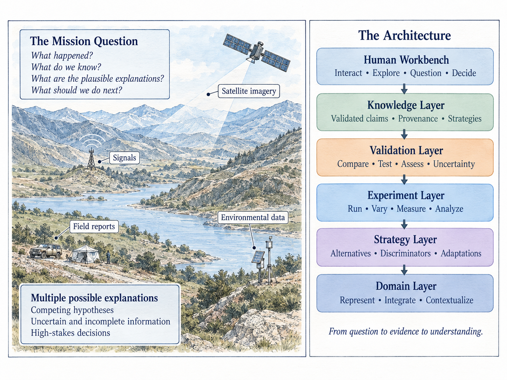
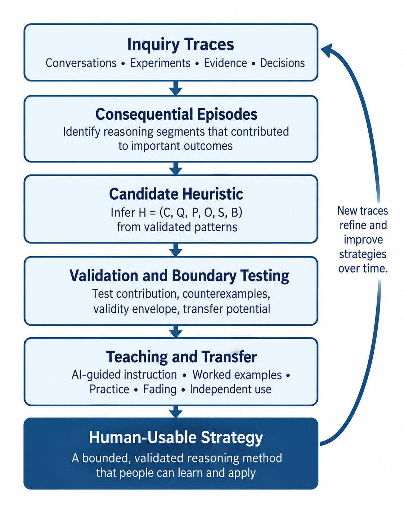

The Book
An accessible guide to human-AI inquiry, judgment, experiments, and learning.
Learn more →A practical guide to using intelligent systems to see the world more clearly, test what we think we know, and improve how people reason over time.
An accessible guide to human-AI inquiry, judgment, experiments, and learning.
Learn more →
Agent-based models, multi-agent AI, counterfactual experiments, and validation.
Explore →
Helping organizations turn modeling and AI into disciplined ways of investigating hard problems.
Work together →
Notes on AI, modeling, simulation, human judgment, and computational social science.
Read the blog →Control what an agent knows, vary one condition at a time, compare rival behavioral models, and confirm what survives on held-out cases.
Explore the economics case study →Language models are very good at giving incomplete reasoning the surface form of finished reasoning.